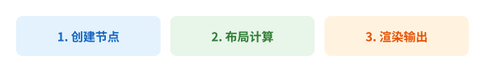

核心概念¶
架构总览¶
LatticeSVG 的渲染流水线分为三个阶段：
样式解析 布局求解 SVG 渲染
┌──────────┐ ┌──────────┐ ┌──────────┐
│ CSS 字典 │ → │GridSolver│ → │ Renderer │ → SVG / PNG
│ → 计算值 │ │ → 盒模型 │ │ → drawsvg│
└──────────┘ └──────────┘ └──────────┘
{kind=link}

节点树¶
LatticeSVG 使用节点树来描述文档结构。每个节点都是 Node 的子类：
GridContainer— 容器节点，使用 CSS Grid 排列子节点TextNode— 叶子节点，显示文本内容ImageNode— 叶子节点，嵌入光栅图片SVGNode— 叶子节点，嵌入 SVG 内容MplNode— 叶子节点，嵌入 Matplotlib 图表MathNode— 叶子节点，渲染 LaTeX 公式
# 节点树示例
page = GridContainer(style={...}) # 根容器
├── TextNode("标题") # 子节点 1
├── GridContainer(style={...}) # 嵌套容器
│ ├── ImageNode("photo.png") # 孙节点
│ └── TextNode("图注")
└── TextNode("页脚") # 子节点 3
样式系统¶
声明式样式¶
所有样式通过 Python 字典传入，属性名与 CSS 一致：
style = {
"width": "400px",
"padding": "16px",
"font-size": "14px",
"color": "#333333",
"background-color": "#ffffff",
"grid-template-columns": ["1fr", "1fr"],
}
样式继承¶
与 CSS 一致，部分属性会从父节点继承（如 color、font-size、font-family），
而盒模型属性（如 padding、margin）不会继承。
ComputedStyle¶
每个节点持有一个 ComputedStyle 对象，负责：
- 解析原始值 — 将
"16px"解析为16.0 - 展开简写 — 将
"padding": "10px 20px"展开为四个方向 - 继承 — 可继承属性从父节点获取
- 默认值 — 未指定的属性使用注册表默认值
布局算法¶
CSS Grid 求解¶
GridSolver 实现了 CSS Grid Level 1 的完整布局算法：
- 轨道模板解析 — 解析
grid-template-columns/grid-template-rows - 子项放置 — 根据
row/col/area参数或自动放置算法确定位置 - 轨道尺寸求解 — 处理固定值、百分比、
fr、auto、min-content、max-content、minmax() - 对齐 — 应用
justify-items、align-items、justify-self、align-self - 盒模型计算 — 为每个节点计算
border-box、padding-box、content-box
盒模型¶
每个节点在布局后拥有三个矩形（Rect）：
┌─────────────────────────── border-box ──┐
│ border │
│ ┌──────────────────── padding-box ──┐ │
│ │ padding │ │
│ │ ┌──────────── content-box ────┐ │ │
│ │ │ │ │ │
│ │ │ 内容区域 │ │ │
│ │ │ │ │ │
│ │ └─────────────────────────────┘ │ │
│ └───────────────────────────────────┘ │
└─────────────────────────────────────────┘
默认的 box-sizing 是 border-box，与现代 CSS 实践一致。
渲染管线¶
Renderer 遍历已布局的节点树，为每个节点生成 SVG 元素：
- 背景 — 纯色、线性渐变、径向渐变
- 边框 — 四边独立颜色/宽度/样式，支持虚线、点线
- 圆角 — 四角独立半径
- 内容 — 文本字形、嵌入图片、SVG 片段、数学公式
- 视觉效果 — 阴影、透明度、变换、滤镜、裁剪路径
输出格式：
| 方法 | 输出 | 说明 |
|---|---|---|
render(node, path) |
.svg 文件 |
并返回 Drawing 对象 |
render_to_drawing(node) |
Drawing 对象 |
内存中的 SVG |
render_to_string(node) |
SVG 字符串 | 适合嵌入 HTML |
render_png(node, path) |
.png 文件 |
需要 cairosvg |
文本引擎¶
LatticeSVG 的文本引擎基于 FreeType，提供：
- 精确测量 — 字形级别的宽度、高度、基线偏移
- 自动折行 — 基于贪心算法的文本换行
- CJK 支持 — 中日韩字符逐字可断
- 富文本 — HTML / Markdown 标记 →
TextSpan→ 多样式混排 - 竖排文本 —
writing-mode: vertical-rl支持 - 字体回退 — 多字体族链式查找
- 字体嵌入 — WOFF2 子集化嵌入到 SVG